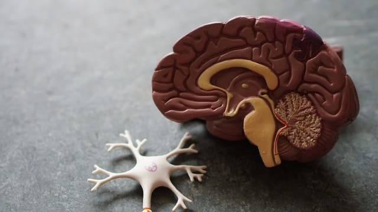

顔面神経麻痺の鍼灸
末梢性顔面神経麻痺に対し、早期の医療機関受診を最優先としたうえで、顔面の血流促進と後遺症予防を支援します。
院長YouTube解説・関連動画
ツボの位置と押し方
承泣は、瞳の中央の真下にある骨の縁にあります。黒目の真下を触ってくぼみを探しましょう。
押すときは指の腹で押します。気持ち良いと感じるくらいの力で押しましょう。左右のツボを同時に押すことをお勧めします。
四白は、瞳の中心の真下で頬骨の下のくぼみにあります。
押すときは指の腹を使います。目の疲れや重さを感じたときは、デスクワーク中の休憩時間にこまめに押しましょう。
攅竹は眉頭にあるツボです。眉頭の少し下にある小さなくぼみにあります。
押すときは親指の腹を使って押しましょう。下から上に押し上げるように押すことをお勧めします。３秒間ほどゆっくり押しましょう。
人気ページ


麻痺の回復期に「強い電気刺激や無理な顔筋トレ」を避けるべき理由
顔面神経は側頭骨の狭い管を通るため、炎症による浮腫で神経障害が起きます。再生途中の神経に強すぎる低周波電気刺激や力任せの表情筋トレーニングを行うと、神経の混線（病的共同運動）や顔のこわばり（拘縮）を招くリスクが知られています。
当院では顔面の低周波通電を避け、耳周囲（翳風）・顔面と手足の経穴を穏やかに整えることで、血流改善としなやかな表情筋の回復を支援します。
なぜ鍼灸で改善へ向かうのか？（作用機序の図解）
顔面神経麻痺に対する鍼灸は、脳循環・三叉神経血管系と神経可塑性の調整機序を通じて、お体本来の回復力を引き出します。

百会・風池・合谷などの経穴刺激が三叉神経や大後頭神経・体性感覚路へ穏やかに作用します。
脳幹の自律神経中枢やセロトニン・GABA系のバランスを整え、神経の過敏発火を鎮めます。
後頭下筋群や首深部のこわばりを解き、頭部・内耳・顔面周囲の血流環境をサポートします。
神経回路の再学習（可塑性）と睡眠の質を高め、専門医の治療やリハビリの土台を支えます。
顔面神経麻痺に用いられる代表的なツボとセルフケア

📌 詳細データ・ツボ一覧表を開く▼
| ツボ名（経穴） | 位置の目安 | 主な狙い・役割 | セルフケアの注意点 |
|---|---|---|---|
| 百会（ひゃくえ） | 両耳上端を結ぶ線と正中線の交点 | 頭部循環・脳卒中後ケア・パーキンソン病の睡眠緩和 | 高血圧発作時・頭部外傷直後は避ける |
| 風池（ふうち） | 後頭部の生え際、僧帽筋外側のくぼみ | 片頭痛予防・後頸部筋緊張緩和・頭部血流改善 | 頸部動脈に近いため強いグリグリ押し厳禁 |
| 合谷（ごうこく） | 手の甲、親指と人差し指の骨が交わる手前 | 頭顔面部の要穴。片頭痛・顔面神経麻痺の遠隔調整 | 妊娠中は強い刺激を避ける |
| 翳風（えいふう） | 耳たぶの後ろ、乳様突起と下顎骨の間のくぼみ | 顔面神経出口近傍の循環改善・ベル麻痺ケア | 神経・血管が集中するため強圧を避け温め中心に |
| 陽陵泉（ようりょうせん） | 膝外側、腓骨頭の前下方のくぼみ | 脳卒中後の痙縮・パーキンソン病の筋固縮ケア | 腓骨神経近接のためしびれが出る強圧は回避 |
| 太衝（たいしょう） | 足の甲、親指と人差し指の骨が交わる手前 | ストレス性片頭痛・のぼせ・緊張緩和 | 妊娠中は刺激を避ける |
日常で心がけたいセルフケアと避けたいNG行動
✓ おすすめのセルフケア
- 発症したら直ちに耳鼻咽喉科・脳神経内科を受診する
- 目が閉じにくい場合は点眼薬・保護テープ等で角膜乾燥を防ぐ
- 蒸しタオルで顔を優しく温め、力を抜いた穏やかなケアを続ける
✕ 悪化しやすいNG行動
- 回復期に顔面への強い低周波電気刺激（EMS等）を行う
- 鏡を見ながら力いっぱい「イー」「ウー」と過度な顔筋トレをする
- 手足の麻痺・激しいめまい・ろれつ障害を伴うのに様子見する（脳卒中除外が最優先）
査読論文が示す「脳神経領域の補完ケア（片頭痛予防・脳卒中後リハ・パーキンソン病睡眠・顔面神経麻痺）×鍼灸」の科学的エビデンス
国際的な医学データベース（PubMed・Cochrane等）で報告されている脳神経領域の補完ケア（片頭痛予防・脳卒中後リハ・パーキンソン病睡眠・顔面神経麻痺）領域の代表的な査読済み鍼灸研究です（標準治療との併用や研究上の限界を含めて掲載しています）。
📚 査読論文データ・出典表を開く▼
| 年・研究デザイン | 対象・規模 | 主な結果と臨床的意義 | 限界・出典 |
|---|---|---|---|
| 2016年 Cochraneレビュー | 反復性片頭痛 22 RCTs（n=4,985） | 無治療比で頻度半減41% vs 17%（RR 2.40）、予防薬比3か月57% vs 46%（RR 1.24）かつ副作用脱落OR 0.27と優位。 | 1年以上の長期検証は不足。 Cochrane (PMID: 27351677) |
| 2016年 Cochraneレビュー | 脳卒中後リハ 31 RCTs（n=2,257） | 通常リハ併用でBarthel Index（MD 9.19）・Fugl-Meyer（MD 6.16）・嚥下・疼痛改善を示唆、重篤な有害事象なし。 | GRADE低〜非常に低。標準リハビリの補完として位置づけ。 Cochrane (PMID: 27562656) |
| 2024年 シャム対照RCT | パーキンソン病の睡眠障害 78名解析 | 抗PD薬併用下でPDSS睡眠尺度が4週時+19.75点・8週時+20.24点とシャム比有意改善（P<0.001）。 | 単施設・小規模・8週間追跡。標準薬併用が前提。 JAMA Netw Open (PMID: 38922617) |
| 2013年 多施設RCT | ベル麻痺（顔面神経麻痺）338名（ステロイド併用） | 6か月時の顔面神経機能回復は得気手技群が対照鍼群より優位（調整OR 4.16）、QOLも改善。 | 全例プレドニゾン併用。急性期の過剰顔面通電は回避配慮。 CMAJ (PMID: 23439629) |
医療機関の受診を最優先すべきサイン（レッドフラッグ）
⚠ 専門医の受診・検査を最優先してください
脳卒中FASTサイン（顔のゆがみ・片腕の脱力・ろれつ困難は即119番）、雷鳴頭痛（突然の最悪の激痛）、発熱・項部硬直・意識障害やけいれん、急性顔面麻痺＋耳の強い痛みや水疱（ラムゼイ・ハント症候群は72時間以内の受診必須）がある場合は、直ちに救急・脳神経内科を受診してください。
参考文献・出典
- 銀座そうぜん鍼灸院「顔面神経麻痺の公式解説ページ」
- 2016年 Cochraneレビュー（反復性片頭痛 22 RCTs（n=4,985））— Cochrane (PMID: 27351677)
- 2016年 Cochraneレビュー（脳卒中後リハ 31 RCTs（n=2,257））— Cochrane (PMID: 27562656)
- 2024年 シャム対照RCT（パーキンソン病の睡眠障害 78名解析）— JAMA Netw Open (PMID: 38922617)
- 2013年 多施設RCT（ベル麻痺（顔面神経麻痺）338名（ステロイド併用））— CMAJ (PMID: 23439629)
よくある質問（FAQ）
Q. 発症してすぐ鍼灸を受けてもよいですか？▼
Q. 病的共同運動を予防するために気をつけることは？▼
あわせて読まれる関連疾患（脳神経のお悩み）
脈打つ強い痛みや光・音への過敏を伴う片頭痛に対し、首肩の深層筋と自律神経を整えて発作頻度と負担の軽減を目指します。
頭を動かした瞬間の回転性めまいに対し、首肩の緊張緩和と内耳循環・自律神経調整、寝返り運動で再発予防を支援します。
突然起こる特発性の片側顔面麻痺に対し、早期の標準治療を最優先しつつ血流改善と病的共同運動の予防を支援します。
自分の体臭や口臭で周囲に迷惑をかけていると過度に悩み続ける状態。精神科・心療内科の専門治療を最優先に、安定期の緊張緩和を支えます。
幻覚や思考の著しい乱れを伴わず固定的な妄想が1か月以上続く精神疾患。精神科での専門治療を最優先に、安定期の不安・不眠ケアを支えます。
頭部外傷なく突然新しい記憶が作れなくなり24時間以内に回復する症状。まず医療機関で脳卒中等を除外し、安定期の誘因ケアを支えます。
おひとりで悩まず、まずはご相談ください
銀座本院・川口・大宮・横浜・博多・田無の各院でご予約を承っております。